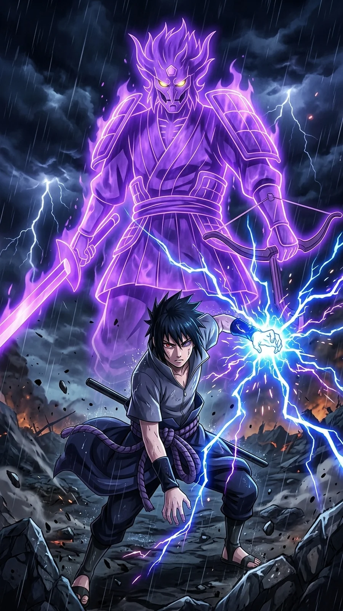

Naruto Shippuden Part 4: Seasons 4-5 (Episodes 72-112) - Every Episode Explained

Last updated: 20 October 2026
This is Part 4 of the complete Naruto Shippuden episode-by-episode guide. From here on each part covers two seasons. This one covers Season 4 and Season 5 - Episodes 72 to 112: the Akatsuki Suppression Mission (all manga canon) and the Three-Tails' Appearance arc (mostly anime-only).
It is the biggest swing in the series so far - one of the best arcs in all of Shippuden, followed by one of its longest filler stretches.
At a glance
- Episodes: 72-112 (41 episodes)
- Season 4: Akatsuki Suppression Mission - episodes 72-88 - manga canon
- Season 5: Three-Tails' Appearance - episodes 89-112 - mostly filler
- Aired: 21 August 2008 - 4 June 2009
- Season 4 score: 9.5/10 · Season 5 score: 5.5/10
Season 4 is one of the best runs in Shippuden. It gives Shikamaru the arc that turns him from a side character into one of the best-written people in the show, and it ends with Naruto's first genuinely new technique. Season 5 is the price you pay for it: 24 episodes of filler about a turtle.
Every episode explained
Episode 72: The Quietly Approaching Threat
Kakuzu and Hidan begin moving toward Konoha. Kakashi tells Naruto the mission to capture Sasori's spy is over and a new one is starting - the Akatsuki are closing in on the village.
Note: Canon resumes. After 18 filler episodes the plot finally restarts.
Episode 73: Akatsuki's Invasion
The Akatsuki pair reaches the Land of Fire. Asuma leads a team out to intercept them, unaware of exactly what they are walking into.
Note: Sets up the best character arc of the season.
Episode 74: Under the Starry Sky
Asuma, Shikamaru, Izumo and Kotetsu engage Hidan and Kakuzu. Hidan's immortality makes him almost impossible to fight normally.
Note: The first real Akatsuki fight since Sasori, and it is brutal.
Episode 75: The Old Monk's Prayer
The fight goes badly. Asuma is mortally wounded by Hidan's curse technique. The team is left trying to get him home.
Note: The most consequential episode of the season. It lands hard.
Episode 76: The Next Step
Asuma dies. Before he goes he tells Shikamaru something that will define Shikamaru for the rest of the series.
Note: Quietly one of the most important scenes in Shippuden.
Episode 77: Climbing Silver
Shikamaru puts Asuma's strategy into motion - a plan built like a shogi game, with himself as the piece that is meant to be sacrificed.
Note: Shikamaru's shogi metaphor pays off here and it is excellent.
Episode 78: The Judgment
Shikamaru faces Hidan with the trap already set. Kakashi and the others deal with Kakuzu.
Note: The plan is tight and the execution is satisfying.
Episode 79: Unfulfilled Scream
Hidan is destroyed and buried. Shikamaru finally allows himself to grieve for Asuma.
Note: The arc's emotional release.
Episode 80: Last Words
Kakuzu's five hearts are explained - he has been keeping himself alive by stealing the hearts of others, and each one gives him a separate elemental attack.
Note: The most interesting villain power of the arc.
Episode 81: Sad News
News of Asuma's death spreads through the village. Kurenai, who was expecting his child, takes it hardest.
Note: A necessary, painful episode.
Episode 82: Team Ten
Shikamaru, Choji and Ino resolve to carry Asuma's legacy. Meanwhile Naruto's wind training continues with Yamato and Kakashi.
Note: Brings the team back together.
Episode 83: Target: Locked On
Kakuzu is still alive and Team Kakashi is sent after him. Naruto arrives with a new technique and something to prove.
Note: Sets up the payoff of the wind training.
Episode 84: Kakuzu's Abilities
Kakuzu uses his four remaining hearts in sequence, forcing the team to adapt to each element.
Note: A strong, technical fight.
Episode 85: The Terrifying Secret
The fight narrows down to Naruto and Kakuzu. Naruto gets ready to use the technique he has spent the season building.
Note: The tension here is real.
Episode 86: Shikamaru's Genius
Shikamaru's plan is shown in full and Kakuzu is left exposed. The arc's two threads meet.
Note: Good payoff for both plotlines.
Episode 87: When You Curse Someone, You Dig Your Own Grave
Hidan's fate is sealed permanently, and Shikamaru walks away having done exactly what he said he would.
Note: A dark, quiet ending to a dark arc.
Episode 88: Wind Style: Rasen Shuriken!
Naruto debuts the Rasen Shuriken - a wind-style Rasengan that hits at a cellular level. It works, but it costs him.
Note: One of the biggest moments in all of Shippuden. Worth the 18 filler episodes.
Episode 89: The Price of Power
The Rasen Shuriken leaves Naruto's arm badly damaged. Tsunade warns him not to use it again. A new threat is detected: Orochimaru's hideout.
Note: A grounded follow-up that stops the new technique feeling like a free win.
Episode 90: A Shinobi's Determination
Naruto, Sakura, Sai and Yamato are sent to investigate Orochimaru's hideout. They meet a girl named Guren who can control crystal.
Note: The Three-Tails arc begins.
Episode 91: Orochimaru's Hideout Discovered
The team enters the hideout area and finds traces of experiments. Guren is working for Orochimaru and has her own agenda.
Note: Slower, but it sets up the arc's villain.
Episode 92: Encounter
The team meets Yūkimaru, a young boy with a strange connection to the Three-Tails. Guren takes an interest in him.
Note: Yūkimaru is the emotional hook of the arc.
Episode 93: Connecting Hearts
Naruto tries to reach Yūkimaru, who has been used and abandoned by the people around him.
Note: The Naruto-and-a-lonely-child beat, done again, but it works.
Episode 94: A Night of Rain
The Akatsuki also move toward the Three-Tails. Three sides are now chasing the same target.
Note: Raises the stakes by adding a third faction.
Episode 95: The Two Charms
Yūkimaru's charm and Guren's past are explored, showing why she is protecting him.
Note: Guren gets actual depth, which filler villains rarely do.
Episode 96: The Unseeing Enemy
The team fights an enemy they cannot see, and Kabuto reappears in the middle of it.
Note: A solid action episode.
Episode 97: The Labyrinth of Distorted Reflection
The team is trapped in a maze of mirrors and reflections, forcing them to fight without being able to trust their own eyes.
Note: One of the better filler set-pieces.
Episode 98: The Target Appears
The Three-Tails surfaces, and all three groups converge on it at once.
Note: The arc's midpoint.
Episode 99: The Rampaging Tailed Beast
The Three-Tails goes on a rampage. Its sheer size makes it a completely different problem from the other tailed beasts.
Note: Good escalation.
Episode 100: Inside the Mist
The team is separated in the mist and forced into individual fights.
Note: A classic Shippuden structure, executed fine.
Episode 101: Everyone's Feelings
Yūkimaru's feelings about Guren and about being used come to the surface.
Note: The character thread peaks here.
Episode 102: Regroup!
The team pulls back and reorganises for a second attempt at sealing the Three-Tails.
Note: Necessary setup.
Episode 103: The Four-Corner Sealing Barrier
The sealing team sets up the four-corner barrier to trap the Three-Tails, with each member holding a corner.
Note: A tense, well-built sequence.
Episode 104: Breaking the Crystal Style
Guren's crystal style is finally countered, and her position becomes impossible.
Note: The best Guren episode.
Episode 105: The Battle Over the Barrier
The fight swings back and forth over the barrier. Holding it costs the team dearly.
Note: Solid action.
Episode 106: Red Camellia
Guren's backstory is told in full, including the camellia that ties her to Yūkimaru.
Note: The arc's most emotional episode.
Episode 107: Strange Bedfellows
Enemies are forced to cooperate against a common threat, which is exactly as uncomfortable as it sounds.
Note: A nice change of pace.
Episode 108: Guidepost of the Camellia
Yūkimaru follows the camellia to find Guren, and the two finally reach each other.
Note: Pays off the thread the arc has been building.
Episode 109: Counterattack of the Curse Mark
A curse mark returns as a weapon, and the team has to deal with an enemy powered by something they have seen before.
Note: Good callback.
Episode 110: Memory of Guilt
Guren is forced to confront what she has done and what it cost.
Note: Quieter, character-focused.
Episode 111: Shattered Promise
The promise between Guren and Yūkimaru is broken, and the arc heads toward its close.
Note: Bleak, but earned.
Episode 112: A Place to Return To
The arc ends. Guren makes her choice and Yūkimaru finds somewhere to belong. The Three-Tails is dealt with, and the story turns back toward the main plot.
Note: A warm ending to a long filler arc.

Part 4 verdict
Watch episodes 72 to 88 without skipping anything. The Asuma arc, Shikamaru's shogi plan and the debut of the Rasen Shuriken are three of the strongest stretches in the whole series, and they all sit inside 17 episodes.
Episodes 89 to 112 are the opposite. The Three-Tails arc is long, it is anime-only, and it takes a tailed beast - something the show usually treats as a serious threat - and turns it into a background problem. Guren and Yūkimaru are better written than filler usually gets, and if you like the characters it is watchable. But if you are watching for the plot, this is the one part of Shippuden you can safely skip.
Overall: 8/10. Half of it is essential, half of it is optional.

Next in this series
Continue the episode-by-episode guide with the next part.